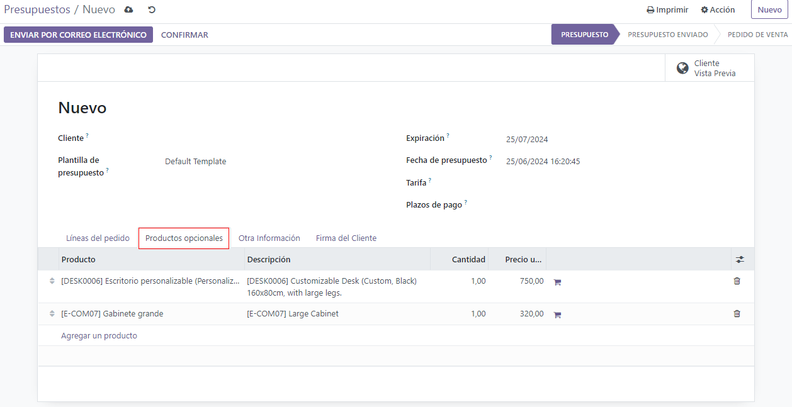
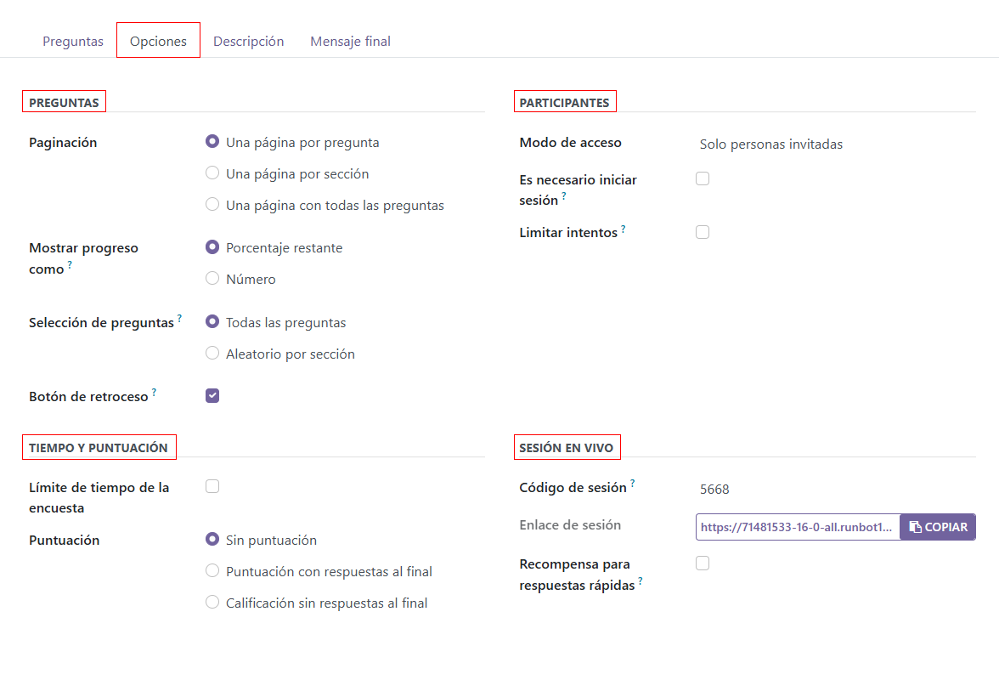
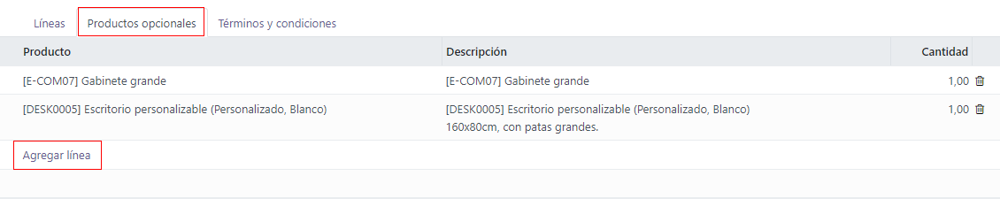

Optional products¶
The use of optional products is a marketing strategy that involves the cross-selling of products along with a core product. The aim is to offer useful and related products to customers, which may result in an increased sale.
For instance, if a customer wants to buy a car, they have the choice to order massaging seats, as well, or ignore the offer and simply buy the car. Presenting the choice to purchase optional products enhances the customer experience.
Optional products on quotations¶
With the Odoo Sales application, it is possible to add or modify optional products directly on quotations by navigating to the Optional Products tab on a quotation form.
To add an optional product(s) to a quotation, click Add a product in the Optional Products tab of a quotation. Doing so reveals a blank field in the Product column.
When clicked, a drop-down menu with products from the database appear. Select the desired product from the drop-down menu to add it as an optional product to the quotation template.
Tip
If the desired product isn’t readily visible, type the name of the desired product in the field, and the option appears in the drop-down menu. Then, select that desired product to add it to the quotation.
Note
When a product is added, the default Quantity is 1, but that can be edited at any
time.
To delete any line item from the Optional Products tab, click the 🗑️ (trash can) icon.
Click the Preview button, located in the upper-left corner of the quotation, to reveal a preview of the quotation customers would receive, via email, along with the optional products they can potentially add to their order, located in the Options section.
Customers are able to add different optional products to an order by clicking the 🛒 (shopping cart) icon, located to the right of the optional product line.
If a customer selects optional products, these are automatically added to the quotation managed by the salesperson.
When the customer adds an optional product(s) to an order, the salesperson is instantly notified about the change, along with any other change the customer makes to an order. This allows salespeople to stay up-to-date with everything related to an order in the backend of the Sales application.
Optional products on quotation templates¶
Note
Be sure to review the Quotation templates documentation to better understand how quotation templates work before reading the following information.
For quotation templates, just like a typical quotation form, there is also an Optional Products tab, wherein related products or services can be added to a quotation template.
To add optional products to a quotation template, navigate to . Then, either select an existing quotation template to edit, or create a new one by clicking New.
On the quotation template form, click the Optional Products tab. Under the Optional Products tab, click Add a line, and select the desired product to add as an optional product to the quotation template.
The products added in the Optional Products tab are present in the quotation, by default, whenever that particular quotation template is used. These products can be removed, and additional products can be added, before the quotation is sent to a customer.
Tip
It’s best to offer optional products that would encourage a customer to add additional items to their order, or entice them to purchase a more expensive version of their initially selected product.
For example, if a customer purchases a wooden chair, some optional products could be: a warranty on that chair and/or a wooden chair with leather seats.
Note
There is no limit to how many optional products can be added to a quotation template.
See also